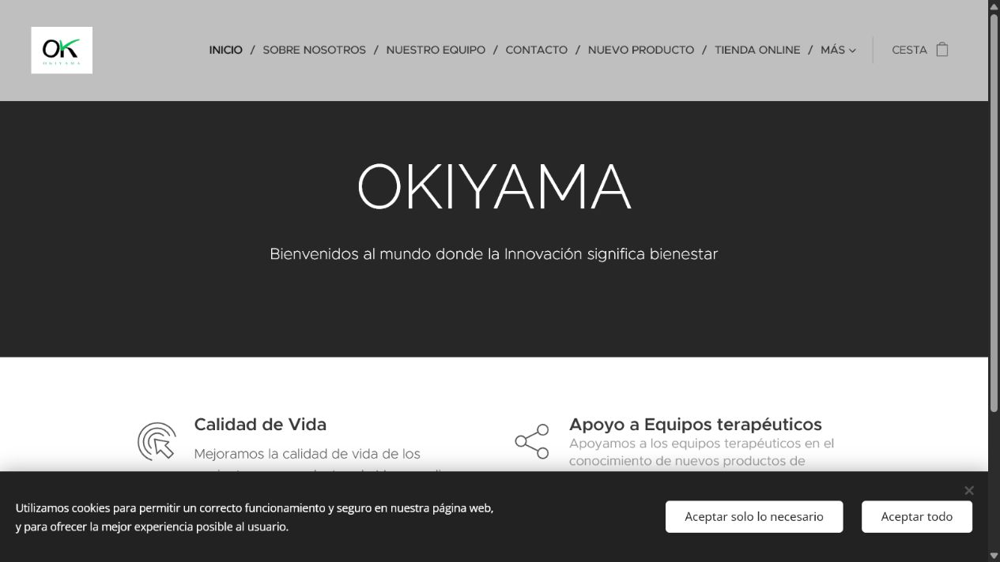
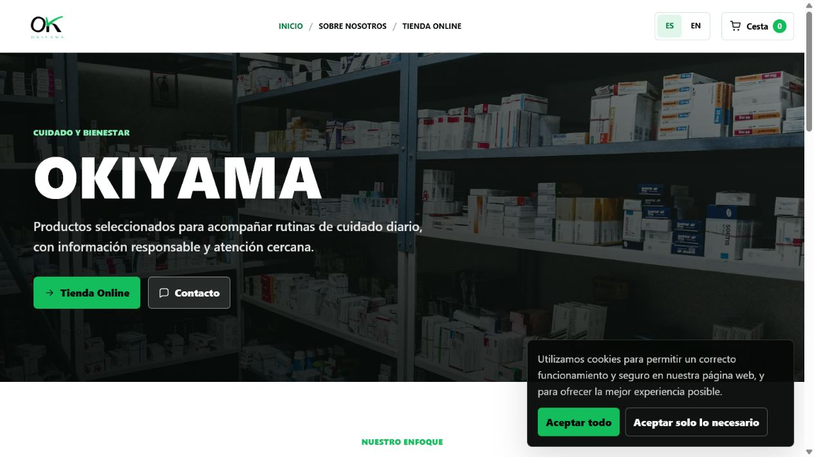

Existing company website
Okiyama already had its brand and product content. The shopping journey needed clearer navigation, stronger visual consistency and more complete cart interactions.
PROFESSIONAL WEB DEVELOPMENT · CASE STUDY
I improved an existing company website to make products easier to explore, streamline cart interactions and provide a clearer route to customer support. The payment step was prepared for later integration.
01 / PROJECT CONTEXT
The goal was to improve the existing experience without replacing the company's visual identity or presenting work in progress as a completed commercial payment system.
Okiyama already had its brand and product content. The shopping journey needed clearer navigation, stronger visual consistency and more complete cart interactions.
I worked on responsive layouts, product and shop pages, cart state, quantity and discount calculations, WhatsApp support and preparation of the checkout interface.
02 / DOCUMENTED EVIDENCE
These screenshots document the visual starting point and the improved maintenance version. They are reference material, not results from an independent usability study.

The earlier interface provided company and product information but showed a less structured route toward the shop and purchase flow.

Stronger product presentation, clearer navigation and the frontend cart and checkout-preparation components.
The earlier website is included as a screenshot reference only; the previous domain is not linked here.
03 / USER EXPERIENCE
The implementation focuses on concrete user journeys rather than unverified performance or sales metrics.
Clear paths to company information, products, the online shop and the cart across screen sizes.
Product cards, information and prices arranged for easier browsing and comparison.
Persistent cart data, quantity updates, calculated totals and discounts in the frontend.
WhatsApp contact, privacy/legal content and a cookie notice in the site experience.
04 / TECHNICAL DECISIONS
Semantic pages for the company, product details, shop, cart and legal information.
Unified brand palette, reusable components, readable cards and adaptive layouts.
Local storage, quantity controls, cart totals, discount logic, form feedback and interface states.
The payment-button interface is prepared for integration; this case study does not claim that real payments are currently processed.
05 / EXPLORE THE PROJECT
These links lead to the project's published/demo pages within the repository. They do not imply an operational payment service.
06 / OUTCOME AND ATTRIBUTION
This case study explains my frontend and UX/UI contribution to an existing Okiyama project. The company brand and products remain the property of their respective owners. The available version documents improvements and ongoing checkout preparation, not measured sales or usability gains.